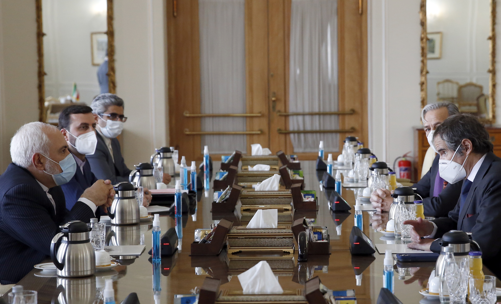
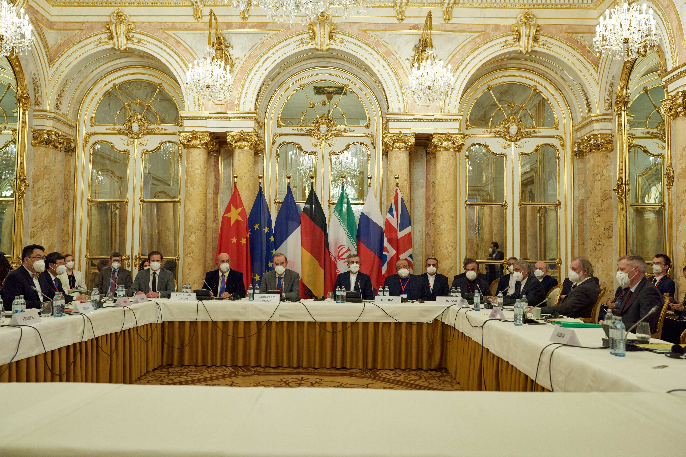

FEB. 2021
Biden rescinds Trump's snapback of UN Iran sanctions under JCPOA implementing resolution 2231

APR - JUN. 2021
P5+1 (US. France, Germany, UK, Russia & China) hold six rounds of indirect nuclear talks with Rouhani government
JUNE 2021
Ultra-hardiner Ebrahim Raisi selected to be president of Iran; nuclear talks stall
AUG. 2021
Raisi inaugurated
NOV - DEC. 2021
P5+1 & Raisi government
restart nuclear talks

FEB. 2021
Iran stops implementing Additional Protocol & JCPOA monitoring measures, which give the lAEA greater insight into Tehran's nuclear activities. Absent these, IAEA access & monitoring at nuclear sites are restricted. Tehran threatens to destroy IAEA data & makes 3.6 grams of uranium metal (used in nuclear weapon cores). IAEA detects undeclared uranium at two sites
APR. 2021
At Natanz PFEP, Iran begins using advanced centrifuges to enrich uranium to bu percent purity, or 99 percent of the effort necessary to reach WGU. At Natanz FEP, Iran uses 1,044 IR-2m centrifuges and 348 IR-4s to enrich uranium up to 5 percent purity
MAY 2021
Iran's enriched uranium stockpile grows to >3,200 kilograms. IAEA must estimate stockpile due to Tehran's reductions in agency monitoring
JUNE 2021
Despite a temporary political arrangement it reached with the IAEA in February, Iran refuses to confirm that it continues to collect and hold in its custody IAEA monitoring and surveillance data at sites Tehran has barred the agency from visiting
AUG. 2021
Iran produces 200 grams of uranium metal enriched up to 20 percent
NOV. 2021
IAEA reports no progress in safeguards investigation into undeclared uranium &activities at three Iranian sites and concerns about activities at a fourth site. Independent estimates find Iran has enough enriched uranium to make WGU for four nuclear weapons within six months and could make WGU for one weapon in three weeks
DEC. 2021
Iran starts enriching 20 percent uranium using a cascade of IR-6 centrifuges at Fordow plant, providing fast route to WGU production at a highly fortified facility